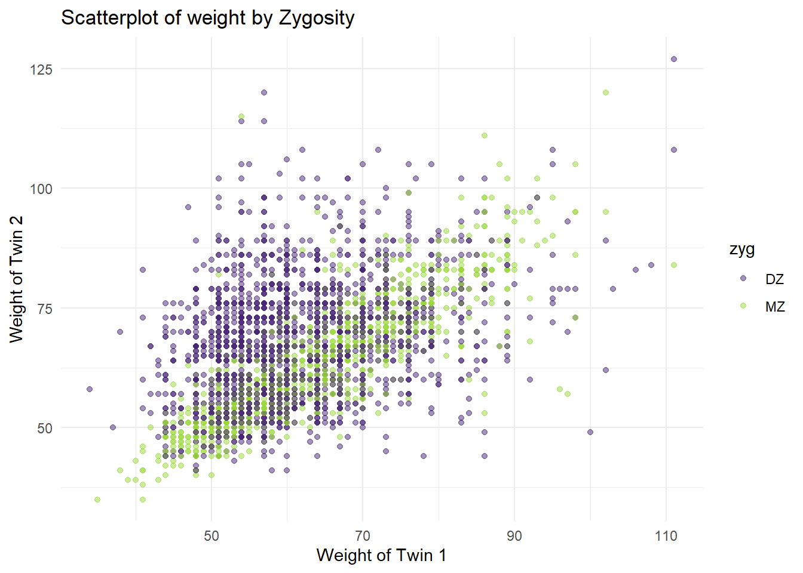

3 Descriptives (Wide)
3.1 Import Data
We’re going to use the twinData dataset from the OpenMx package. This dataset contains 3,808 pairs of Australian twins on the 12 variables.
## ── Attaching core tidyverse packages ──────────────────────── tidyverse 2.0.0 ──
## ✔ dplyr 1.1.4 ✔ readr 2.1.5
## ✔ forcats 1.0.0 ✔ stringr 1.5.1
## ✔ ggplot2 3.5.1 ✔ tibble 3.2.1
## ✔ lubridate 1.9.3 ✔ tidyr 1.3.1
## ✔ purrr 1.0.2
## ── Conflicts ────────────────────────────────────────── tidyverse_conflicts() ──
## ✖ dplyr::filter() masks stats::filter()
## ✖ dplyr::lag() masks stats::lag()
## ℹ Use the conflicted package (<http://conflicted.r-lib.org/>) to force all conflicts to become errors##
## Attaching package: 'OpenMx'
##
## The following object is masked from 'package:BGmisc':
##
## vech3.2 Data Structure
## [1] "data.frame"## Rows: 3,808
## Columns: 16
## $ fam <int> 1, 2, 3, 4, 5, 6, 7, 8, 9, 10, 11, 12, 13, 14, 15, 16, 17, 18…
## $ age <int> 21, 24, 21, 21, 19, 26, 23, 29, 24, 28, 29, 19, 23, 22, 23, 2…
## $ zyg <int> 1, 1, 1, 1, 1, 1, 1, 1, 1, 1, 1, 1, 1, 1, 1, 1, 1, 1, 1, 1, 1…
## $ part <int> 2, 2, 2, 2, 2, 2, 2, 2, 2, 2, 2, 2, 2, 2, 2, 2, 2, 2, 2, 2, 2…
## $ wt1 <int> 58, 54, 55, 66, 50, 60, 65, 40, 60, 76, 48, 70, 51, 53, 58, 4…
## $ wt2 <int> 57, 53, 50, 76, 48, 60, 65, 39, 57, 64, 51, 67, 51, 55, 57, 5…
## $ ht1 <dbl> 1.7000, 1.6299, 1.6499, 1.5698, 1.6099, 1.5999, 1.7500, 1.559…
## $ ht2 <dbl> 1.7000, 1.6299, 1.6799, 1.6499, 1.6299, 1.5698, 1.7698, 1.529…
## $ htwt1 <dbl> 20.0692, 20.3244, 20.2020, 26.7759, 19.2894, 23.4375, 21.2245…
## $ htwt2 <dbl> 19.7232, 19.9481, 17.7154, 27.9155, 18.0662, 24.3418, 20.7476…
## $ bmi1 <dbl> 20.9943, 21.0828, 21.0405, 23.0125, 20.7169, 22.0804, 21.3861…
## $ bmi2 <dbl> 20.8726, 20.9519, 20.1210, 23.3043, 20.2583, 22.3454, 21.2270…
## $ cohort <chr> "younger", "younger", "younger", "younger", "younger", "young…
## $ zygosity <fct> MZFF, MZFF, MZFF, MZFF, MZFF, MZFF, MZFF, MZFF, MZFF, MZFF, M…
## $ age1 <int> 21, 24, 21, 21, 19, 26, 23, 29, 24, 28, 29, 19, 23, 22, 23, 2…
## $ age2 <int> 21, 24, 21, 21, 19, 26, 23, 29, 24, 28, 29, 19, 23, 22, 23, 2…3.3 Summary Statistics
3.3.1 Numeric Variables
# Calculate summary statistics
summary_stats <- df %>%
summarise(across(where(is.numeric), list(
mean = ~mean(., na.rm = TRUE),
sd = ~sd(., na.rm = TRUE),
median = ~median(., na.rm = TRUE),
IQR = ~IQR(., na.rm = TRUE)
), .names = "{col}_{fn}")) %>%
pivot_longer(
cols = everything(),
names_to = c("variable", "statistic"),
names_sep = "_"
) %>%
pivot_wider(
names_from = statistic,
values_from = value
)
summary_stats## # A tibble: 13 × 5
## variable mean sd median IQR
## <chr> <dbl> <dbl> <dbl> <dbl>
## 1 fam 1904. 1099. 1904. 1904.
## 2 age 34.5 14.2 30 19
## 3 part 1.93 0.265 2 0
## 4 wt1 62.2 10.9 60 15
## 5 wt2 65.6 12.2 65 16
## 6 ht1 1.66 0.0896 1.65 0.130
## 7 ht2 1.69 0.0990 1.7 0.140
## 8 htwt1 22.5 3.16 21.9 3.84
## 9 htwt2 22.8 3.19 22.3 3.78
## 10 bmi1 21.7 0.940 21.6 1.21
## 11 bmi2 21.8 0.939 21.7 1.18
## 12 age1 34.5 14.2 30 19
## 13 age2 34.5 14.2 30 193.4 Frequency Tables
# Counting 'zygosity' and calculating percentages
zygosity_summary <- df %>%
count(zyg, name = "count") %>%
mutate(percentage = count / sum(count) * 100) %>%
rename(category = zyg) %>% # Renaming the column for clarity
mutate(variable = "zygosity") # Adding a descriptor column for the variable
# Counting 'sex' and calculating percentages
sex_summary <- df %>%
count(sex, name = "count") %>%
mutate(percentage = count / sum(count) * 100) %>%
rename(category = sex) %>% # Renaming the column for clarity
mutate(variable = "sex") # Adding a descriptor column for the variable
# Combining both summaries into a single dataframe
combined_summary <- bind_rows(zygosity_summary, sex_summary) %>%
select(variable, category, everything()) # Reordering columns for clarity
combined_summary## variable category count percentage
## 1 zygosity DZ 2009 52.75735
## 2 zygosity MZ 1799 47.24265
## 3 sex F 1983 52.07458
## 4 sex M 919 24.13340
## 5 sex OS 906 23.79202What if you want to examine effects by cohort? You can use the group_by function to group the data by cohort and then calculate the summary statistics for each cohort.
library(tidyverse)
# Grouping by 'cohort' and calculating summary statistics for each group across values that are numeric
df_summary <- df %>%
group_by(cohort) %>%
summarise(across(where(is.numeric), list(
mean = ~mean(., na.rm = TRUE),
sd = ~sd(., na.rm = TRUE),
median = ~median(., na.rm = TRUE),
IQR = ~IQR(., na.rm = TRUE)
), .names = "{.col}_{.fn}")) %>%
# Ensure only statistic columns are being pivoted
pivot_longer(
cols = -cohort, # Exclude 'cohort' from pivoting
names_to = c("variable", "statistic"),
names_sep = "_"
)
# lock in the variable order
variable_order <- unique(df_summary$variable)
df_summary <- df_summary %>%
pivot_wider(
names_from = statistic,
values_from = value,
values_fn = list(value = mean) # Aggregate if necessary
)
df_summary %>% mutate(variable = factor(variable, levels = variable_order)) %>%
arrange(variable, cohort)## # A tibble: 26 × 6
## cohort variable mean sd median IQR
## <chr> <fct> <dbl> <dbl> <dbl> <dbl>
## 1 older fam 2859 548. 2859 949
## 2 younger fam 955 551. 955 954
## 3 older age 45.4 12.2 42 19
## 4 younger age 23.5 3.66 23 7
## 5 older part 1.95 0.224 2 0
## 6 younger part 1.92 0.299 2 0
## 7 older wt1 63.8 11.2 62 15
## 8 younger wt1 60.5 10.3 59 14
## 9 older wt2 67.0 12.7 66 19
## 10 younger wt2 64.1 11.6 64 17
## # ℹ 16 more rowsWhat about descriptives by zygosity and sex?
library(tidyverse)
# Grouping by 'zyg,sex' and calculating summary statistics for each group
df_summary <- df %>%
group_by(zyg,sex) %>%
summarise(across(where(is.numeric), list(
mean = ~mean(., na.rm = TRUE),
sd = ~sd(., na.rm = TRUE),
median = ~median(., na.rm = TRUE),
IQR = ~IQR(., na.rm = TRUE)
), .names = "{.col}_{.fn}")) %>%
# Ensure only statistic columns are being pivoted
pivot_longer(
cols = -c(zyg,sex), # Exclude 'zygosity' from pivoting
names_to = c("variable", "statistic"),
names_sep = "_"
)## `summarise()` has grouped output by 'zyg'. You can override using the `.groups`
## argument.# lock in the variable order
variable_order <- unique(df_summary$variable)
df_summary <- df_summary %>%
pivot_wider(
names_from = statistic,
values_from = value,
values_fn = list(value = mean) # Aggregate if necessary
)
df_summary %>% mutate(variable = factor(variable, levels = variable_order)) %>%
arrange(variable,zyg,sex)## # A tibble: 65 × 7
## # Groups: zyg [2]
## zyg sex variable mean sd median IQR
## <chr> <chr> <fct> <dbl> <dbl> <dbl> <dbl>
## 1 DZ F fam 2109. 1029. 2891 2048
## 2 DZ M fam 2144. 1009. 1370. 2042.
## 3 DZ OS fam 2509. 980. 1852. 1956.
## 4 MZ F fam 1338. 992. 1956. 1956.
## 5 MZ M fam 1750. 1010. 2583 2013
## 6 DZ F age 35.4 14.3 32 20
## 7 DZ M age 32.3 13.9 28 16
## 8 DZ OS age 32.9 13.9 28 17
## 9 MZ F age 35.7 14.3 32 21
## 10 MZ M age 34.4 14.1 31 18
## # ℹ 55 more rows3.5 Plots
Histograms and scatter plots to visualize distributions and relationships.
ggplot(df, aes(x = wt1)) +
geom_histogram(bins=30, fill="blue", color="black") +
labs(x="weight", y="Frequency", title="Distribution of weight for Twin 1") +
theme_minimal()## Warning: Removed 97 rows containing non-finite outside the scale range
## (`stat_bin()`).
# Basic Scatter Plot of weight of Twin 1 vs. weight of Twin 2
p <- ggplot(df, aes(x=wt1, y=wt2, color=zyg)) +
geom_point(alpha=.5) +
labs(x = "Weight of Twin 1",
y = "Weight of Twin 2",
title = "Scatterplot of weight by Zygosity") +
scale_color_viridis_d(option = "virdis",
begin = 0.1,end=.85) +
theme_minimal()
p## Warning in viridisLite::viridis(n, alpha, begin, end, direction, option):
## Option 'virdis' does not exist. Defaulting to 'viridis'.## Warning: Removed 173 rows containing missing values or values outside the scale range
## (`geom_point()`).
Adding a regression line to the scatter plot.
## `geom_smooth()` using formula = 'y ~ x'## Warning: Removed 173 rows containing non-finite outside the scale range
## (`stat_smooth()`).## Warning in viridisLite::viridis(n, alpha, begin, end, direction, option):
## Option 'virdis' does not exist. Defaulting to 'viridis'.## Warning: Removed 173 rows containing missing values or values outside the scale range
## (`geom_point()`).
library(ggplot2)
library(ggExtra)
# Create marginal density plots for x and y axes
p_x <- ggplot(df, aes(x = wt1, fill = zyg)) +
geom_density(alpha = 0.5) +
theme_minimal() +
scale_fill_viridis_d(option = "viridis", begin = 0.1, end = 0.85) +
theme(axis.title.x = element_blank(),
axis.text.x = element_blank(),
axis.ticks.x = element_blank())
p_x## Warning: Removed 97 rows containing non-finite outside the scale range
## (`stat_density()`).
p_y <- ggplot(df, aes(x = wt2, fill = zyg)) +
geom_density(alpha = 0.5) +
scale_fill_viridis_d(option = "viridis", begin = 0.1, end = 0.85) +
coord_flip() +
theme_minimal() +
theme(axis.title.y = element_blank(),
axis.text.y = element_blank(),
axis.ticks.y = element_blank())
p_y## Warning: Removed 86 rows containing non-finite outside the scale range
## (`stat_density()`).## Warning in viridisLite::viridis(n, alpha, begin, end, direction, option):
## Option 'virdis' does not exist. Defaulting to 'viridis'.## Warning in viridisLite::viridis(n, alpha, begin, end, direction, option):
## Option 'virdis' does not exist. Defaulting to 'viridis'.## Warning: Removed 173 rows containing missing values or values outside the scale range
## (`geom_point()`).## Warning in viridisLite::viridis(n, alpha, begin, end, direction, option):
## Option 'virdis' does not exist. Defaulting to 'viridis'.## Warning: Removed 173 rows containing missing values or values outside the scale range
## (`geom_point()`).
## Warning in viridisLite::viridis(n, alpha, begin, end, direction, option):
## Option 'virdis' does not exist. Defaulting to 'viridis'.
## Warning in viridisLite::viridis(n, alpha, begin, end, direction, option):
## Option 'virdis' does not exist. Defaulting to 'viridis'.## Warning: Removed 173 rows containing missing values or values outside the scale range
## (`geom_point()`).## Warning in viridisLite::viridis(n, alpha, begin, end, direction, option):
## Option 'virdis' does not exist. Defaulting to 'viridis'.## Warning: Removed 173 rows containing missing values or values outside the scale range
## (`geom_point()`).
## Warning in viridisLite::viridis(n, alpha, begin, end, direction, option):
## Option 'virdis' does not exist. Defaulting to 'viridis'.
## Warning in viridisLite::viridis(n, alpha, begin, end, direction, option):
## Option 'virdis' does not exist. Defaulting to 'viridis'.## Warning: Removed 173 rows containing missing values or values outside the scale range
## (`geom_point()`).## Warning in viridisLite::viridis(n, alpha, begin, end, direction, option):
## Option 'virdis' does not exist. Defaulting to 'viridis'.## Warning: Removed 173 rows containing missing values or values outside the scale range
## (`geom_point()`).